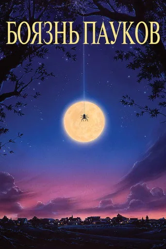

Боязнь пауков 1990
В амазонской сельве в Венесуэле погибает от укуса паука американский натуралист. Гроб с его телом отправляется в США, а в нём тайно в Калифорнию проникает и паук. На новом месте пауки начинают размножаться в геометрической прогрессии и угрожать городу Канайма. Молодой врач Росс прибывает в город, вступая в конкуренцию со старым доктором Сэмом, которому жители доверяют больше. На руках Росса умирают несколько пациентов по неизвестным причинам, что подрывает доверие жителей к нему. Очередной жертвой «эпидемии» падает и его конкурент. Россу удается выяснить, что причиной многочисленных смертей являются невиданные в их краях пауки. При этом, Росс страдает арахнофобией — боязнью пауков. Вместе с несколькими добровольными помощниками доктор вступает в борьбу с членистоногими и убивает их королеву, обнаруженную в его собственном доме.
Открыть в каталогеДанные и постеры принадлежат их правообладателям. Этот продукт использует TMDB API, но не одобрен и не сертифицирован TMDB.